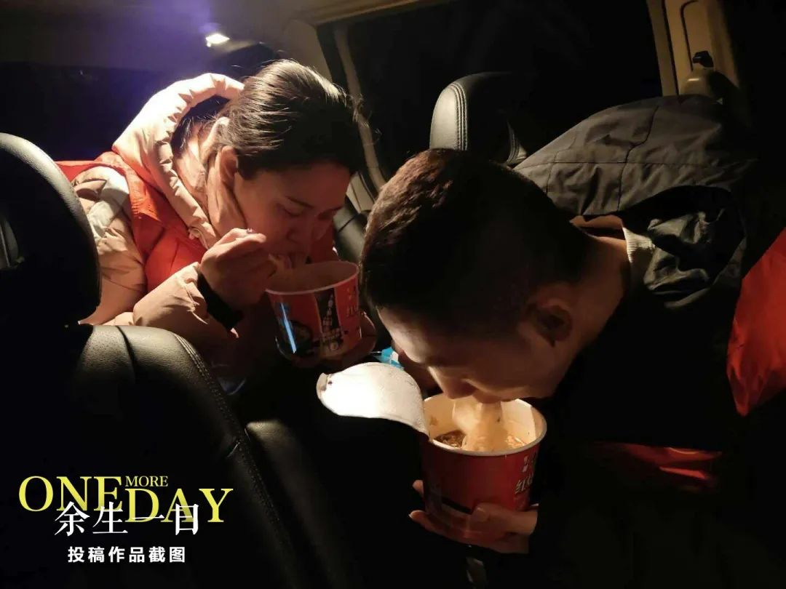
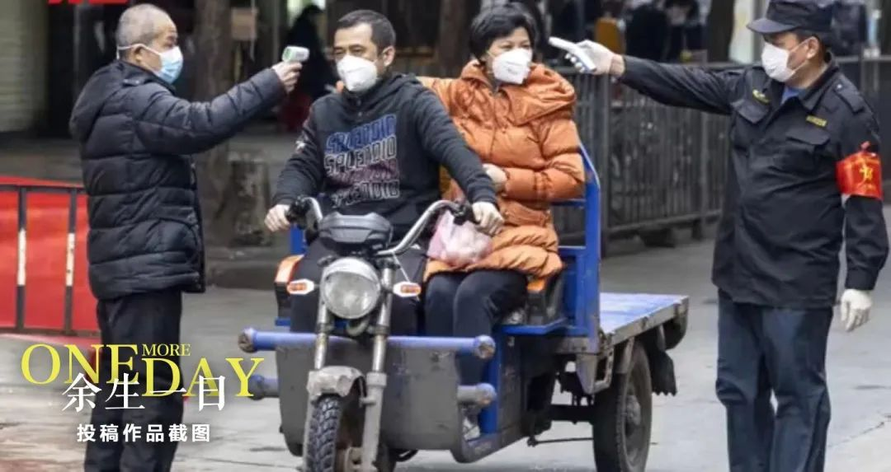
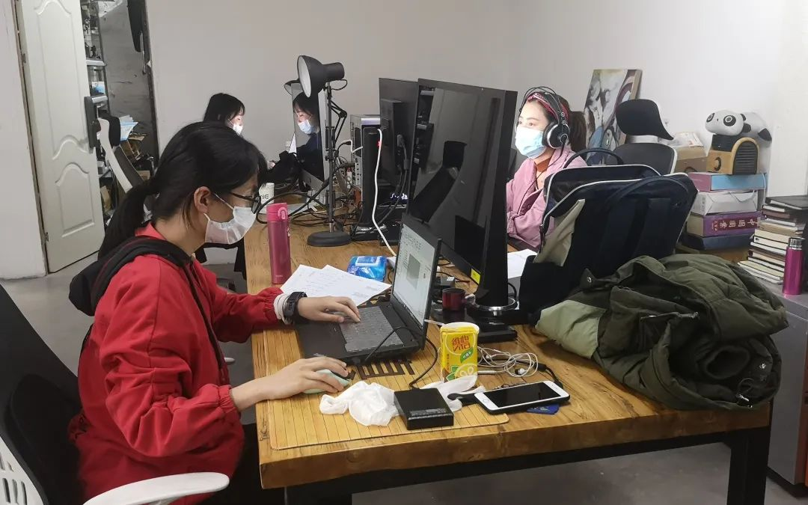

***
***229家A股公司年报推迟披露 ，多家湖北企业考虑延期
原文链接 备份链接 疫情不仅严重影响了企业复工，多家A股公司年报披露也因此延期。作为此次疫情重灾区，湖北省内上市公司年报披露所受影响正逐步显现 文 |《财经》记者 张建锋 王颖 编辑 | 陆玲 突然袭来的新型冠状病毒，不仅严重影响了企业复 …
***** *****
*****
*****如在看素材、写脚本的过程中，秦晓宇不断地感受到疫情之下人们生发出的恐惧和爱意。他坚信，这种爱意，恰恰是我们克服恐惧，克服冷漠、自私和敌意的力量。*****

《余生一日》投稿作品截图。
文 | 新京报记者 张惠兰
编辑｜王婧祎 校对 | 翟永军
►本文约4491字，阅读全文约需9分钟
2020年2月9日。对大多数中国人来说，这一天的记忆并不美好。新冠肺炎疫情仍在扩散，很多人在那天看到了国家卫健委的通报——截至2月8日24时，全国累计报告确诊病例37198例。
这是疫情当下的普通一天。很多人居家隔离，戴口罩出门，在手机上刷着最新的消息……然而，这一天，将被烙印在几千个拿起手机、相机的记录者的余生记忆里。
2月5日，纪录片导演、大象纪录创始人秦晓宇在网上发出倡议，邀请所有被疫情影响的人，拍摄下自己在2月9日任一时刻的生活片段。收到素材后，他将和团队一起，制作出一部纪录片，也是一份中国人在疫情中的“影像日记”，取名为《余生一日》。
截至目前，秦晓宇团队已经收到3000多份投稿，拍摄者遍布全国各地乃至海外，基本都是华人。秦晓宇说，目前团队还在整理分类素材，和另外两位剪辑师筛选素材的同时，他也在撰写脚本，希望能让片子赶在3月底前面世。
46岁的秦晓宇是内蒙古人，诗人，2015年以来，他开始执导或监制纪录片，题材多聚焦于底层和边缘人物，如热爱诗歌的打工者、临终关怀医院的老人等。用这种独特的方式制作《余生一日》，是基于秦晓宇一直以来的信念：人人皆有诗心，人人皆有创造力。
在看素材、写脚本的过程中，秦晓宇不断地印证这一信念，也不断地感受到疫情之下人们生发出的恐惧和爱意。他坚信，这种爱意，恰恰是我们克服恐惧，克服冷漠、自私和敌意的力量。
以下是新京报记者与秦晓宇的对话：
“余生一日”
***** *****
*****
*剥洋葱：*为什么要制作这样一部纪录片？
秦晓宇：这是作为纪录片人的第一反应，因为这次疫情本身有特别大的记录意义，从微观到宏观层面都有很大的影响，宏观是社会，微观是个人生活，记录能给未来留一些资料。
具体到这种全民记录的方法，第一是基于疫情防控的要求，我们没办法亲自到各地进行拍摄；第二，疫情的影响波及方方面面，包括各个行业、各个地区、每个人，但显然任何技术团队都不可能有这样的人力、物力去做如此全面的记录；第三，单一的纪录片拍摄者会有主观局限，如果让更多的人来参与，每个人用自己的立场和看问题的角度，记录着对自己而言的真实，这些东西汇总在一起，可以呈现更完整的真实。
《余生一日》发起人、纪录片导演秦晓宇。受访者供图
*剥洋葱：*片名为什么要叫“余生一日”？
秦晓宇：我们可以在三重意义上来理解它。第一，可以理解为“劫难中的一日”，这次疫情对所有的人、对整个社会都是一场劫难，劫难中会发生很多事情，会有很多强烈的情感，也有方方面面呈现出来的特殊状态，纪录片应当为未来著史。
第二，也可以理解为“我”生命中普通的一天。对于绝大多数人来说，不管社会发生了怎样的变化，我们还是要过柴米油盐的普通日子，哪怕在劫难中，我们也会想尽办法让这个日子尽可能好一点，有一些乐趣和幸福感。
再有，它也是重生的一日。这次疫情会让很多平常不善于或者不喜欢思考的人，因为有了时间和这样的事件背景，而去思考一些关于家庭、真相、人与人的关系、人与动物的关系等问题。这种思考不仅仅是对自己生活的审视，同时也包含一种社会反思，从而一点点地推动社会进步。这可能是这次不幸中的一点点有价值的东西。
*剥洋葱：拍摄方式和片名，会让人联想到2011年上映的美国纪录片《浮生一日》，你们是否受到了这部片子的启发？*（注：*《浮生一日》由英国导演凯文·麦克唐纳执导，190个国家和地区的网民拍摄下自己在2010年7月24日里的生活琐事，总计近4500小时的素材被剪成95分钟纪录片。*）**
秦晓宇：我们当然也受到《浮生一日》的启发。但《浮生一日》的拍摄应该是在2010年左右，当时自媒体没有今天这么发达，大家拍摄视频的意识、水平、设备也没有今天这么好。
我们在内容上也有很大的不同。《浮生一日》给出的是一种日常生活景观，而我们拍摄的所有人的生活，他们的喜怒哀乐、悲欢离合，都是发生在疫情这个大背景之下，是一种非常状态下的日常生活，因为通常我们不会这样过日子：走在路上都戴着口罩，或者根本就没法出门。
就创作来说，这种“非常态”会产生一个巨大的偏离和陌生化的效果，同时会也激发你的情感。你的各种情绪都会在这种“非常态”的状态下被激发出来。很多来自武汉的素材，其实不用怎么拍，拍摄者只要把自己的恐惧、担忧、爱意……这种最本真的状态拿出来，就特别打动人。
*剥洋葱：*除了普通民众之外，有专业人士参与吗？
秦晓宇：我们联系了全国各地的三四十个航拍“飞手”，希望他们那天白天能飞得低一点，让我们看到街道上人们的神情。还有一些玩GoPro（注：一种运动摄像机）的，把摄像头绑在自己的身上进行拍摄，另外也联系了一些车载拍摄的。
还有一些参与者是我认识的电影相关从业者，比如《乡村里的中国》的导演焦波老师，2月5日左右我给他打电话，他当时生了病，也不敢去医院，就在家里大把吃药，于是拍了自己在家养病的状态。还有一位是电影《矮婆》的导演蒋能杰，他那天拍摄了他奶奶一天的生活。
我后来发现一个挺有意思的现象。这些专业摄影师或者专业纪录片人，他们更多记录的是他人或者自己周围世界，而非专业的人大多是对准自身。当你需要一些情节点，一些特别触动人心的话语时，往往这些非专业人士能带给你更多的惊喜。
《余生一日》投稿作品截图。受访者供图
“复调的，众声喧哗的”
**************
剥洋葱：这些拍摄素材主要包括哪些内容和情绪？
秦晓宇：占比很大的是拍摄自己隔离在家的状态。一部分人拍摄了自己的周围环境，比如去药店、超市，在小区散步。纪录片工作者、航拍“飞手”、摄影师等专业人员会记录公共空间发生的一些事情，比如道路的隔断、检查。还有一类是跟疫情密切相关的，比如方舱医院里的病人、医护人员，外卖小哥、志愿者，他们多处在工作状态中，记录了自己的工作。
我目前看到的，七情六欲、喜怒哀乐忧思恐都会有呈现，没有任何明显情绪的也有。我们原本也希望这部作品是复调的、众声喧哗的，而不是有着统一调性的作品。
*剥洋葱：*讲一讲来自武汉的内容吧。
秦晓宇：武汉让人感动的素材特别多。一个小伙子，走上他们家的楼顶，指着一片灯火比较暗淡的地方，说那是菱角湖，湖边的湖北省中西医结合医院是最早收治新冠肺炎患者的地方，再远处一公里就到了华南海鲜市场。他也谈到自己的感受，说封城的这段时间，人的活动减少了之后，他明显听到鸟叫声变多了，pm2.5数值也降下来了。那天是正月十六，他攥着手机介绍他所处的位置，镜头转到月亮那儿，让人看了有“人有悲欢离合，月有阴晴圆缺”的感触。
一个武汉的姑娘，她先是让镜头对准自己，说“最近武汉……”就说不下去了。“算了，给大家看一看凌晨2点的武汉吧。”她声音发颤，同时把手机拿到窗外，画面黑黢黢的，“你看外面已经没几个灯火了，白天更明显，整个城市就像被按了暂停键一样。”
还有一个网名叫“二蛋大王”的医生。他从宁夏到湖北支援，拍摄是在医院里进行的，面对镜头，他谈到了恐惧，他说一怕疫情不能很快结束，二怕自己染病甚至因此挂掉。虽然背景有点过曝，构图也不能算好，但是因为他们离危险最近，让那种恐惧更真实，让人有强烈的共鸣感。

《余生一日》投稿作品截图。受访者供图
*剥洋葱：*还有哪些让你印象深刻的素材？
秦晓宇：有一个姑娘在宁波，春节不能回老家，她奶奶是属鼠的，正好过生日，她就用面团做了三只小老鼠，写上“96（岁）快乐”。
还有一个女孩儿，因为曾跟确诊患者有过接触，信息在小区群里被曝光，立刻收到了骚扰电话。她说自己感受到了世界对她的深深恶意。她说，自己不怕死，但是怕在歧视中死去。
有一个汕头的姑娘，对着河边的风景，说出了真诚的祝福，祝福的对象中包括她的前男友。我想是不是这次疫情也让她对两个人的故事有了重新看待。她说，疫情给自己的影响是把每一天当作生命的最后一天来看待，这样每一天也会被格外珍惜。
有一家人拍摄了他们在屋子里做口罩的情景，还有一对父子在屋子里踢足球。再比如一只跛脚鸭走在田间地头上，空中飘荡着四川话的广播：“大家把这件事儿办好了，天天都是春节，办不好，这就是最后一个春节。”这样的素材特别多，充满了想象力。
爱是克服恐惧、冷漠、自私和敌意的力量
**************
*剥洋葱：*收集完素材，接下来要做什么？
秦晓宇：整理素材、做场记。我们有8-10个人在做素材整理的工作。到现在为止，素材我已经看了百分之五六十。之后是粗剪，再精剪。我本来以为剪辑和制作会是一个特别巨大的难题，但是在看素材、做剪辑脚本的过程中，我的信心慢慢变得充足。信心主要来自于素材的丰富性和出人意料的程度。
我一直有一种认识，人人皆有诗心，人人皆有创造力，这次疫情，一方面激发了大家的困境感、恐惧感、囚禁感等情绪，但另一方面，又因为大家都“憋”得很厉害，不能出门，这样的表达是可以释放这种憋屈的。

纪录片团队正在加紧制作。受访者供图
*剥洋葱：*这些素材能够促进人们对这场疫情的认识吗？
秦晓宇：疫情发生以后，大家能够看到的多是发生在公共空间的事，比如政府部门在开会研究，工地在紧张施工，医院在救治病人，大街上空空荡荡。但是在我们收到的这些素材中，大部分人都处于“闭关”的状态，拍摄者回到了自己的私人空间。我们原本只知道自己在家里面是怎么过的，我们哪里知道农村跟城市里面的家庭有什么区别，重疫区和轻疫区有什么区别，中产阶级家庭跟底层打工者有什么区别，在这些场域里又会有什么有趣的事情、有趣的对话？
比如投稿中出现的一位值班民警，他拍摄了自己工作和居家的状态，你能看到，他到家以后会把那件亮光闪闪的警服挂在院子里消毒，不带到屋里去。通常我们看到的所有公共记录的镜头，都是拍民警在街头工作的场景，他怎样去检查、怎样去量体温，但其实他有他的情感、他的爱好、他的家庭，在这些素材中，他一下子就变成了一个可亲可爱的人，而不只是一个职业身份。
**剥洋葱：等影片制作完成后，你希望传递怎样的意义？**
秦晓宇：纪录片的使命是记录真相，特别是在现在这种消息纷繁复杂的情况下，每个人基于自己的观察，基于自己所处的位置，呈现自己眼中的真实就显得特别重要，有助于我们来认识真相，记录下每个普通人的生活史。
另外，全民记录的这种形式本身就能给大家一种启示，即每个人的生命体验都是值得被尊重的，都是有价值的，不存在等级高下之分。
再有，疫情之下人们生发出的恐惧和爱意，也将会是片子的一个重要主题。这种恐惧感，既包括对自己和亲友染病的担忧，也有对疫情带来的持续影响的焦虑，甚至还蔓生出了对湖北人的没来由的歧视，你会感觉到人与人的关系突然被拉远，甚至分崩离析，这是我们在瘟疫之外创造了另外一种瘟疫。但另一方面，我们在素材当中又看到，退居到家庭之内，很多人会重新思考家庭的意义，重新感受自己以前未察觉的美好。这种爱意恰恰是我们克服恐惧，克服彼此的冷漠、自私和敌意的力量。
*洋葱话题*
*▼*
*****你对全民记录的形式怎么看？*****
*后台回复关键词*****“洋葱君” ，加入读者群****
***推荐阅读***
**29岁殉职医生彭银华的最后20天
**

新冠疫情中陨落的三位武汉教授

*********既然在看，就点一下吧****** *********
*********
原文链接 备份链接 疫情不仅严重影响了企业复工，多家A股公司年报披露也因此延期。作为此次疫情重灾区，湖北省内上市公司年报披露所受影响正逐步显现 文 |《财经》记者 张建锋 王颖 编辑 | 陆玲 突然袭来的新型冠状病毒，不仅严重影响了企业复 …
原文链接 备份链接 2020年注定不平凡。武汉封城、公众场所关闭、复工日期不断推迟……疫情让武汉人的生活被迫减速甚至停滞，而一批又一批的医护人员和志愿者逆行奔赴战场。 疫情期间，我们见证了无数感人的英雄故事，也 …
原文链接 备份链接 世界卫生组织官员对韩国和伊朗等地爆发新冠病毒疫情表示担忧，但表示情况尚未上升到大流行病的程度。在美欧金融市场，这一模式已变得清晰：新增确诊病例数=增加的市场恐慌=疲弱的资本市场。这一模式会否必然在中国出现，尚待观察 …
原文链接 备份链接 2020-02-25 21:54:22新京报 记者：杜雯雯 编辑：陈晓舒 2020-02-25 21:54:22新京报 记者：杜雯雯 我们上海公共卫生中心在1月5日提交正式的报告，从我们公共卫生的角度，我们的科学家、我 …
原文链接 备份链接 以下文章来源于地球青年图鉴 ，作者地青 杨飞霖站在人来人往的纽约时代广场，戴着口罩，手里举着一块牌子，上面写着一句她自己想出来的标语“Mask+Asian≠Virus（口罩+亚裔≠病毒）”，牌子的另一面则写 …